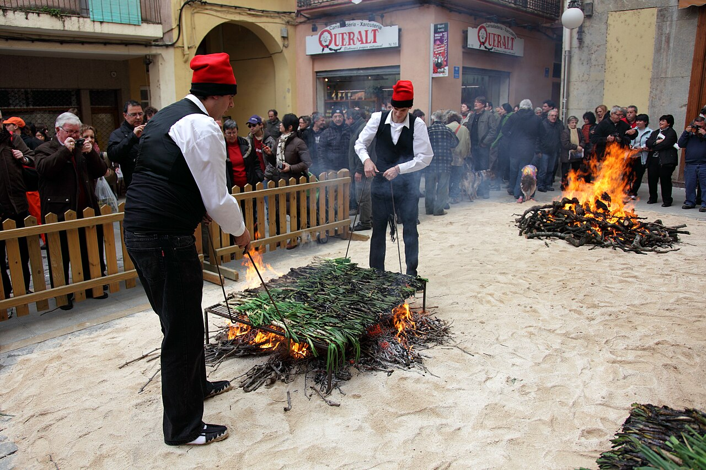
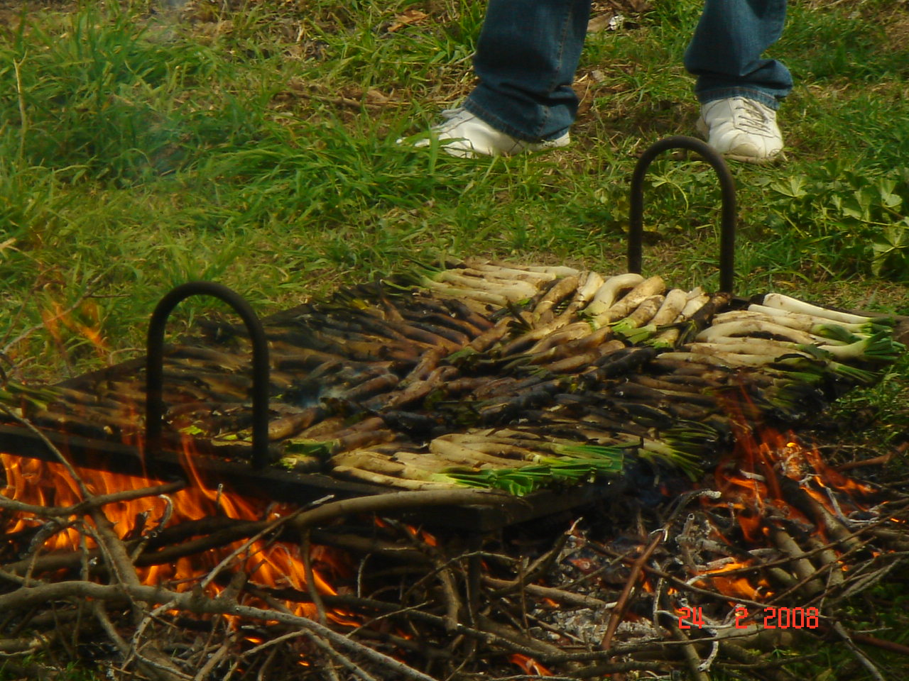
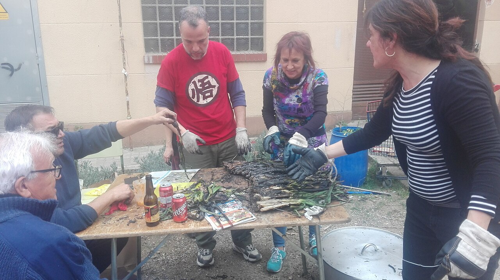

La calçotada neix a Valls, a l'Alt Camp, a finals del segle XIX, quan un pagès conegut com el Xat de Benaiges va descobrir que, si es cobria la ceba tendra amb terra, en brotaven tiges llargues i dolces: els calçots. Cuits a la flama viva i embolicats amb paper de diari, es mengen amb les mans, amb pitet i la salsa romesco de rigor.
El ritual mana: coure'ls fins que la capa exterior queda negra, pelar-los d'una estrebada, sucar-los generosament i empassar-los amb el cap enrere i un porró de vi a l'altra mà. Després vénen la carn a la brasa, la mongeta, l'allioli i les postres —una calçotada és un àpat sencer, no un entrant.
Cada últim diumenge de gener, Valls celebra la Gran Festa de la Calçotada, amb concursos, cercaviles i milers de comensals. La temporada va de novembre a abril: fora d'aquests mesos, la brasa demana escalivada.
Galeria



Vídeo
Font: Easy Catalan a YouTube.